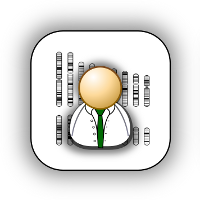
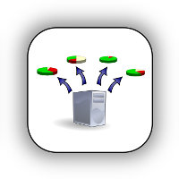

The open source SeqWare project is a portable software infrastructure designed to analyze massive genomics datasets produced by contemporary and emerging technologies, in particular Next Generation Sequencing (NGS) platforms. It consists of a comprehensive suite of tools focused on enabling the end-to-end analysis of sequence data -- from from raw base calling to analyzed variants ready for interpretation by users.
| Users | Administrators | Developers |
|---|---|---|
|  |  | |
| Create and run workflows either using a web application or command line interface | Deploy SeqWare on a virtual machine, in the Cloud, or on your own cluster | Contribute to SeqWare by getting involved with core development |